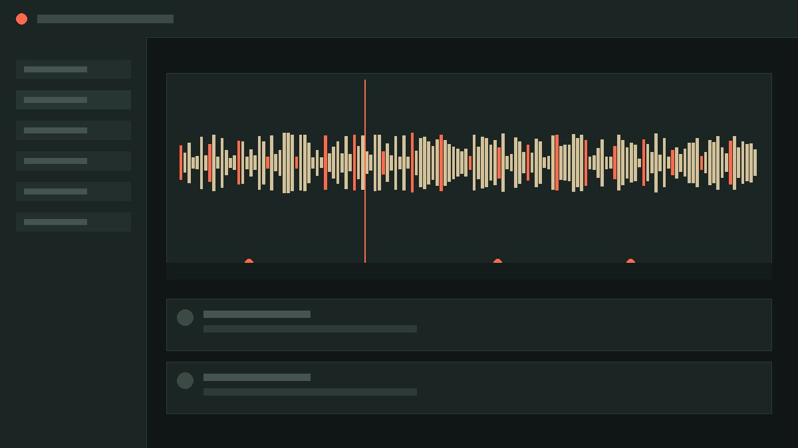

Live shared timeline
Two editors, one waveform. Cuts, fades, and markers sync instantly — no exported files, no version confusion.
For podcast & audio teams
Cadence turns raw recordings into shippable episodes — with live multi-editor timelines, timestamped notes, and one-click handoffs to your host.
What's inside
Two editors, one waveform. Cuts, fades, and markers sync instantly — no exported files, no version confusion.
Drop a comment right on the second it applies to. Your host replies without ever opening the editing software.
Export a review link, a distribution-ready master, or both — with loudness-normalized audio, automatically.
The workflow
Import from Zoom, Riverside, or a local mic feed. Cadence auto-splits speakers on arrival.
Invite your co-editor. You'll both see the same waveform move in real time.
Send a timestamped review link to your host, then export the final master in one pass.
Inside the editor

Free for teams shipping up to 3 episodes a month. No credit card required.
Start free — takes 2 minutes